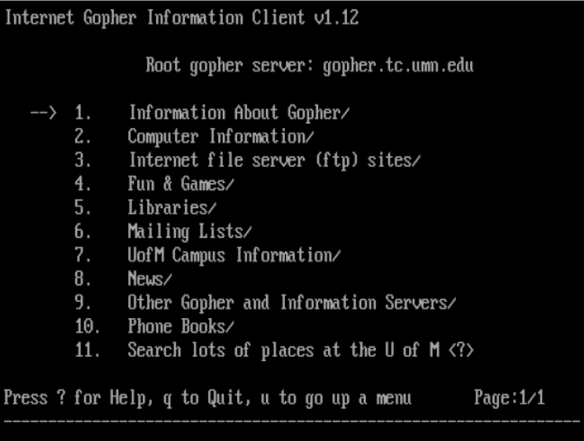
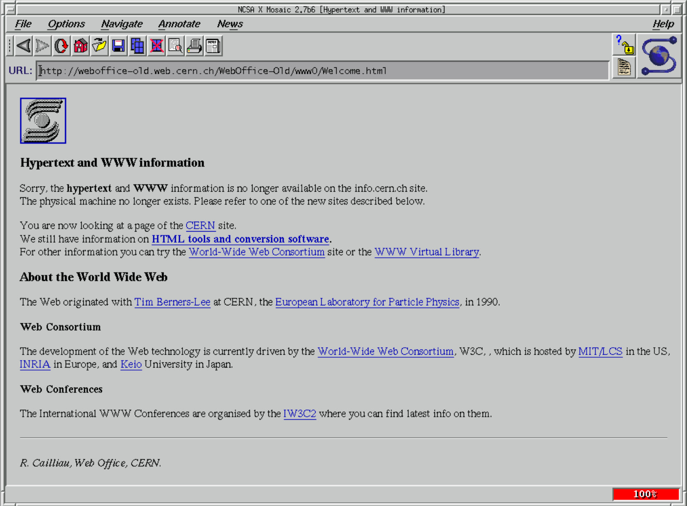

The origins of the Internet date back to the 1950s [1]. At that time, the Cold War was at its peak and there were vast tensions between the USA and the Soviet Union. Back then, computers were large, expensive machines used exclusively by military scientists and university faculty. After the Soviet Union launched “Sputnik“, the first artificial Earth satellite, in October 1957, the USA's National Aeronautics and Space Administration (NASA) and the Department of Defense’s Advanced Research Project Agency (ARPA) had a goal to develop more space and military technology such as rockets and computers to rival the Soviet threat [2]. Soon, in 1968, Lawrence Roberts helped develop the packet-swinging technology, the first-ever connection of two computers [1]! After the first packet-switching network was developed, it was the birth of the ARPA Network – ARPAnet – and the beginning of computer communication [1], [2]! Once ARPAnet was created and running, it quickly expanded, connecting numerous academic, military, and research institutions through a joined network [1]!
Soon, the need for an agreed set of rules handling all this data arose, which resulted in the creation of the first network protocols.
In 1969, Telnet was created as a part of the ARPAnet project [3]. It was one of the first network protocols and was used to access and manage a remote device or server. However, Telnet was insecure because it lacked fundamental security measures such as encryption and secure authentication. In 1995, a more secure alternative to Telnet was developed – SSH (Secure Shell or Secure Socket Shell) [4]. SSH is more secure and reliable than Telnet as it uses encryption to protect data, has secure authentication and secure data transmission. Until today, it is still the preferred method of secure remote access.
In 1971, Abhay Bhushan invented the FTP protocol (File Transfer Protocol), a network protocol for transferring files over a network [1]. Later, in 1995, as an extension to the SSH protocol, a more secure alternative to the FTP protocol was invented - SFTP (Secure File Transfer Protocol). In 1974, Bob Kahn and Vint Cerf invented the TCP and IP protocols. TCP protocol (Transmission Control Protocol) is a communication protocol that enables message exchange over a network and IP protocol (Internet Protocol) is the address system of the Internet, it is fundamental for delivering information from the source to the target [5]. Together, TCP and IP create an Internet Protocol Suite – TCP/IP – where IP protocol deals with routing and addressing the packets of information, while the TCP protocol ensures delivery.
These protocols allowed ARPAnet to interconnect, interwork, and eventually grow into a global interconnected network of networks – internetworking or simply internet for short [1], [2].
The growth of ARPAnet resulted in the development and improvement of early Internet applications, protocols and inventions such as: Email, Gopher, HTTP, SSH, SFTP, WWW, and many more.
Electronic mail (Email) is a method of sending messages electronically [2]. In the early 1960s, electronic messaging could only be done if it was on the same computer [1]. In 1971, Ray Tomlinson, an American computer programmer, invented a network email system which allowed users to send emails from their computer to a different computer across the ARPAnet. Tomilson introduced the idea that the destination computer of the message should be indicated with an @ symbol. With the creation of remote email, the network had transformed. Email became an important professional and academic communication tool for sending messages between different ARPAnet computers, and as a result of the rapid growth of ARPAnet, evolved into a broader social tool. It had even become a place to communicate, gossip, and make friends [1].
In the early 1980s, cheaper technology and the accessibility to computers created a rapid development of local area networks (LANs) [1]. The increase in the number of computers on the network caused difficulty in tracking all the different IP addresses. In 1983, this problem was solved by the introduction of the Domain Name System (DNS) invented by Paul Mockapetris and Jon Postel. DNS translates the human-readable domain names into IP addresses [6]. It is one of the fundamental Internet infrastructures, it powers almost all Internet services such as email and the web.
In the late 1980s, the activity on the Internet grew by more than 10 times due to the popularity of email, the invention of DNS, and the common use of TCP/IP protocols [1]. However, computers were still not user-friendly and intuitive, and advanced knowledge of computing was needed to use them efficiently. Also, there was still no agreement on how the documents on the network should be formatted. The solution to this problem was proposed in 1989 by the British computer scientist Tim Berners-Lee. He proposed a new way of structuring and linking all the information available on a computer network which would make it quick and easy to access. The proposal and concept of a “web of information” was first proposed to his employer, CERN, the international particle-research laboratory in Switzerland, but ultimately became the concept for the Work Wide Web (WWW) [1].
Berners-Lee’s idea of the “web of information” relied on Hypertext Markup Language (HTML) and hyperlinks. He proposed HTML as a way of structuring text files intended for display on a Web page within a Web browser. A markup language, a set of codes or symbols that would change the appearance and modify the text file into a structured document. And the hyperlinks would be a way of connecting those documents, they would be able to point to any other HTML page or file. Following the invention of HTML and hyperlinks, in 1990 Berners-Lee developed the Hypertext Transfer Protocol (HTTP), an application-layer protocol that governs communication between web browsers and web servers, and designed the Universal Resource Identifier (URI), a string of characters used to uniquely identify a resource on the web server [1], [5]. Essentially, Berners-Lee created a system of hypertext documents and resources, formatted using HTML and accessed over the internet using the HTTP protocol - this system is the World Wide Web (WWW). The World Wide Web became available to the public in late 1991 and its popularity took off in 1993 with the release of the Mosaic web browser [5].
Before the actual creation of the World Wide Web, there was Gopher, a menu-driven Internet application used to share documents [5], [3]. Gopher was a pre-Web system developed in 1991 by the University of Minnesota [3]. It was very popular in the 1990s, especially within academic and research institutions. However, after the introduction of Mosaic in 1993, one of the first graphical web browsers, Gopher was superseded by the World Wide Web. Mosaic was developed by Marc Andreessen and was designed for widespread use [5], [7]. It was a graphical browser, meaning it was able to display both text and images. It was the browser that popularized the World Wide Web. It supported hyperlinks, and was available on multiple platforms, including Windows, Mac OS, and Unix. But, it was also soon overshadowed by other, better, web browsers: Netscape and Internet Explorer [7]. Mosaic’s development officially stopped in 1997. Another impactful browser was Lynx, another one of the first web browsers, first released in 1992 [5], [7]. Unlike Mosaic, which was a Graphic User Interface (GUI) browser, Lynx is a Command-line Interface (CLI) browser. Lynx is actually the oldest browser in use as it is still being used and maintained! It is the most popular text-only browser in use today!

